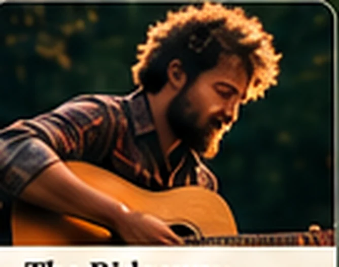
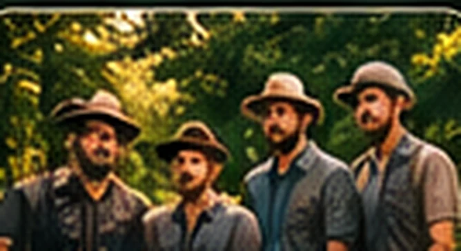
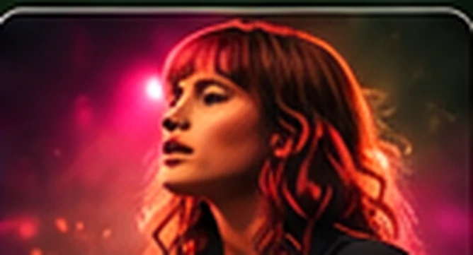
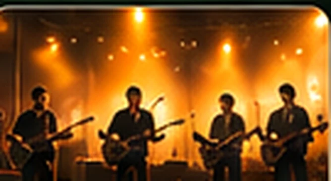

01 / 06
INDIE FOLK / SOUL
Ella North
Heart-on-sleeve storytelling
Warm vocals, close-knit harmonies and songs that make a small clearing feel like the centre of the world.
ON THE HILLSIDE STAGESaturday · 4:00 PM
See the timetable ↗AN INTIMATE LINEUP
INDIE FOLK / SOUL
Heart-on-sleeve storytelling
Warm vocals, close-knit harmonies and songs that make a small clearing feel like the centre of the world.

02 / 06ALT FOLK / ROOTS
Rhythm with a little dust on its boots
An earthy blend of acoustic guitar, rolling percussion and spirited roots music made for long afternoons.
SOUL / R&B
Golden-hour energy
A voice full of texture, fearless melodies and a rhythm section that will have the whole hillside moving.

04 / 06FOLK / AMERICANA
Stories with room to breathe
Four friends, unhurried harmonies and wonderfully weathered songs about places, people and finding your way home.

05 / 06INDIE / ALT POP
Delicate meets electric
Dreamlike melodies and an intimate stage presence with unexpected flashes of colour and intensity.

06 / 06FOLK ROCK
A joyful final chorus
A vibrant ensemble of guitars, keys and soaring group vocals, here to carry the weekend into the stars.
Discover when each performer takes the hillside stage.
Explore the timetable ↗